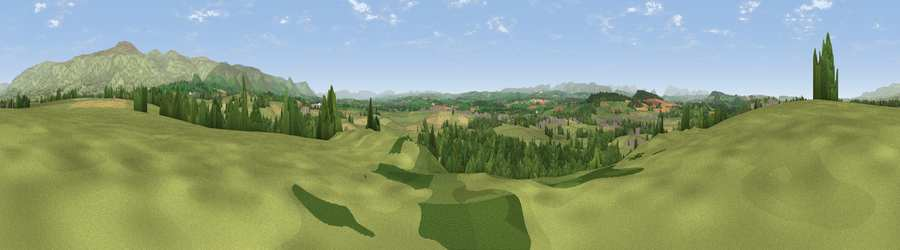

Viewpoint near Newbiggin
#10179 in England · top 43% of its area beats it · near NewbigginThe view, rendered

A 360° render of this exact spot computed from the terrain model, tree cover and land cover — summer colours, afternoon light, calibrated against photographs of famous viewpoints. Real trees, hedges and buildings will differ in detail.
The panorama
Grey silhouette: terrain skyline in each direction (720 bearings, Earth curvature and refraction included). Dashed green: skyline with trees (+15 m) and buildings (+8 m) as obstacles. Blue strip: how far the ground is visible on each bearing.
Where the view opens
Wedge length = distance to the farthest visible ground on that bearing (vegetation-aware). Rings at 10, 25 and 50 km.
What fills the view
65% grassland · 26% woodland · 9% cropland ·
Angular shares of the visible panorama (visual magnitude), not map area. Landscape diversity 0.38 (0–1 Shannon).
Key numbers
More beautiful places nearby
The staircase of upgrades: each row has a higher view potential than everything closer. Driving times are estimates from straight-line distance, calibrated against real road routing — check an actual route before setting out.
| Place | Direction | Drive | Score |
|---|---|---|---|
| Viewpoint near Cliburn | WSW · 4 km | ~9 min | 69.0 |
| Knock Pike | E · 6 km | ~14 min | 71.3 |
| Viewpoint near Blencarn | NE · 7 km | ~14 min | 76.2 |
| Cross Fell | NE · 9 km | ~17 min | 78.7 |
| Viewpoint near Plumpton | WNW · 13 km | ~23 min | 78.9 |
| Viewpoint near Watermillock | WSW · 18 km | ~30 min | 82.6 |
| Viewpoint near Watermillock | WSW · 18 km | ~31 min | 83.5 |
| Viewpoint near Legburthwaite | WSW · 31 km | ~48 min | 83.8 |
54.65173, -2.59007 · source: screening · position refined by local search. Computed location — check access rights before visiting.